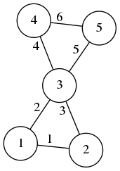

This is one of the best books in image processing:
You should buy several copies, for yourself, your friends and your family; and ask your lab to buy several copies for the library. Or even better, since the editor (whose name I have trimmed from the cover image) is a notorious bully, instead of buying it, download a copy from libgen and send the money directly to the authors.
The book is a collection of independent self-contained chapters written by different authors, all of them famous people from the french school of image processing.
The only critique of this book that I can conceive is that the ``practice'' part of the title is not really fullfilled. There is not a single line of real computer code displayed in the book. But giving the codes for the hundreds of experiments of a 500 page book is probably too much to ask. The goal of this document is to provide such a code for a small part of the book.
My favourite chapters are 6 and 7:
6. A short tour of mathematical morphology on edge and vertex weighted graphs, Laurent Najman and Fernand Meyer
7. Partial difference quations on graphs for local and nonlocal image processing, Abrerrahim Elmoataz, Olivier Lézoray, Vinh-Thong Ta and Sébastien Bougleux.
And these are the chapters whose implementation I detail below.
The book contains this kind of sentences: $\newcommand{\R}{\mathbf{R}}$
Let $G=(V,E)$ be a graph and $\mathcal{H}(V)$ be the Hilbert space of real-valued functions defined on the vertices of $G$. The space $\mathcal{H}(V)$ is endowed with the usual inner product $\left<f,h\right>_{\mathcal{H}(V)}=\sum_{v_i\in V}f(v_i)h(v_i)$, where $f,h:V\to\R$. Similarly, let $\mathcal{H}(E)$ be the Hilbert space of real-valued functions defined on the edges of $G$, $\ldots$. Now, consider a linear operator between Hilbert spaces $A:\mathcal{H}(V)\to\mathcal{E}(V)$...
While these sentences are crystal clear and very appealing to an audience of mathematicians, I have found them to be intimidating when trying to evangelize people to read the book. Thus, I ``translate'' them into the following kind of language, which is $100\%$ equivalent:
Consider a graph with $n$ vertices and $m$ edges. We will use vectors of length $n$ and $m$ to represent functions defined over the vertices or the edges, respectively. We will also use matrices of size $m\times n$ to represent linear maps between them $A:\R^n\to\R^m$. In octave/matlab:n = 100; # number of vertices in the graph m = 200; # number of edges in the graph x = rand(n,1); # define a random function over the vertices A = rand(m,n); # define a random linear map y = A * x; # obtain a function over the edges
This is easier to interpret thanks to the computer code. Of course, linear maps with random coefficients are silly. We will see more interesting examples below.
You would think that to work with graphs on a computer you need some sort of library for graphs. Nothing farther from the truth. What you really need is a library for doing linear algebra. In all the examples here we use octave, but you can translate it easily to python+numpy, which is slightly more verbose.
In what follows we reserve the letters $n$ and $m$ for the following meanings
$n\, =\ \,$ number of vertices in the graph
$m =\ \,$ number of edges in the graph
For the following graph, we have $n=5$ and $m=6$:
 $$ Z = \begin{pmatrix} 1 & 2 \\ 1 & 3 \\ 2 & 3 \\ 3 & 4 \\ 3 & 5 \\ 4 & 5 \end{pmatrix}_{\small 6\times 2} A = \begin{pmatrix} 0 & 1 & 1 & 0 & 0 \\ 1 & 0 & 1 & 0 & 0 \\ 1 & 1 & 0 & 1 & 1 \\ 0 & 0 & 1 & 0 & 1 \\ 0 & 0 & 1 & 1 & 0 \\ \end{pmatrix}_{\small 5\times 5} B = \begin{pmatrix} -1& 1 & 0 & 0 & 0 \\ -1& 0 & 1 & 0 & 0 \\ 0 &-1 & 1 & 0 & 0 \\ 0 & 0 &-1 & 1 & 0 \\ 0 & 0 &-1 & 0 & 1 \\ 0 & 0 & 0 &-1 & 1 \\ \end{pmatrix}_{\small 6\times 5} $$
There are five basic matrices associated to a graph, for which we will always use the same letters:
$Z\ \,=\ \,$ adjacency list, of size $m\times 2$,
list of vertex index pairs
$A\ \,=\ \,$ adjacency matrix, of size $n\times n$,
logical matrix of joined vertices
$B\ \,=\ \,$ incidence matrix, of size $m\times n$,
list of input/output vertices of each edge
$C\ \,=\ \,$ centering matrix, of size $m\times n$,
defined as $C=\frac{1}{2}|B|$
$L\ \,=\ \,$ Laplacian matrix, of size $n\times n$,
defined as $L=-B'B$
It is very important to understand now the meaning of the matrices $Z,A,B$. The matrix $Z$ is the easiest to type by hand in a computer, but it is not very useful for doing algebra with it. All the other matrices are fundamental linear operators over functions defined on the graph. Each of these fives matrices, alone, determines completely the graph (modulo the numbering of the edges, in the case of $A$ and $L$).
The matrices $A$, $B$ and $C$ satisfy the identity: $A=2C^TC-B^TB/2$. This allows to compute $A$ from $B$. To recover $B$ from $A$ we must decide on an ordering for the edges.
The following octave functions allow to convert between each representation:
function A = graph_adjacency_from_list(Z)
n = max(Z(:)); # number of vertices
U = sparse(Z(:,1), Z(:,2), 1, n, n); # directed graph
A = U + U'; # symmetrization
end
function B = graph_incidence_from_adjacency(A)
[i,j] = find(triu(A)); # find the (i,j) positions
n = rows(A); # number of vertices
m = rows(i); # total number of edges
B1 = sparse(1:m, i, 1, m, n); # matrix for destination vertices
B2 = sparse(1:m, j, 1, m, n); # matrix for source vertices
B = B1 - B2; # signed incidence matrix
end
function Z = graph_list_from_adjacency(A)
[i,j] = find(triu(A));
Z = [i j];
end
function A = graph_adjacency_from_incidence(B)
A = max(-B'*B,0); # equal to (abs(B'*B) - B'*B) / 2
end
Typically, in the applications, you can often build $B$ directly so that you do not really need these functions. From $B$, the other matrices are easily computed if needed by:
L = -B'*B; A = L > 0; C = abs(B)/2;
The following table summarizes the language that we will use everywhere.
| $n$ | number of vertices in the graph |
| $m$ | number of edges in the graph |
| $u\in\R^n$ | scalar field $u$ |
| $\mathbf{v}\in\R^m$ | scalar field $\mathbf{v}$ |
| $B:\R^n\to\R^m$ | gradient |
| $-B^T:\R^m\to\R^n$ | divergence |
| $L:\R^n\to\R^n$ | Laplacian |
| $C:\R^n\to\R^m$ | centering operator (from vertices to edges) |
| $C^T:\R^m\to\R^n$ | centering operator (from edges to vertices) |
| $C^TC:\R^n\to\R^n$ | smoothing operator |
The most important notion is that the matrix $B$ is called the gradient. It is a linear operator that maps scalar fields (vectors of lenght $n$) into vector fields (vectors of length $m$). This definition is used for an arbitrary graph, but it makes a lot of sense when the graph is the grid of an image, because in that case the gradient corresponds exactly to the gradient computed using finite differences.
The pixels of an image are arranged naturally in the shape of a grid. Here, for example, you have the grid of a $4\times 3$ image:
Here you see that the graph has $n=12$ vertices and $m=17$ edges. In general, for an image of size $w\times h$, the graph will have $n=wh$ vertices and $m=(w-1)h+(h-1)w$ edges. The matrix $A$ of such a graph is build by the following octave code
function A = grid_graph(w, h) # build a grid graph WxH
px = sparse(1:w-1, 2:w, 1, w, w); # path graph of length W
py = sparse(1:h-1, 2:h, 1, h, h); # path graph of length H
U = kron(py,speye(w)) + kron(speye(h),px); # kronecker sum
A = U + U'; # symmetrization
end
This works because the grid graph is the product graph of two paths, and the adjacency matrix of a product graph is the Kronecker sum of their matrices.
The graph defines just the domain of an image. We still need the data. As a sample image, we will use the amazing portrait of Samuel Beckett by Jane Bown:

beckett.png
The easiest operator to understand is the Laplacian. The following octave code thus reads an image, applies the laplacian operator, and saves the result.
x = imread("i/beckett.png"); # load input image
[w, h] = size(x); # extract dimensions
x = double(x(:)); # flatten image data into a vector
A = grid_graph(w,h); # build graph adjacency matrix
L = A - diag(sum(A)); # Laplacian matrix
y = L * x; # Laplacian of the original image
z = uint8(reshape(127-2*y,w,h)); # contrast change and reshape
imwrite(z, "beckett-lap.png"); # save output image

beckett-lap.png
The typical color coding for looking at a laplacian is such that gray=zero, white=negative, black=positive. As expected, the laplacian enhances the edges and textures while setting the constant regions to zero.
By substracting the laplacian to the image, we ``sharpen'' the original image.
y = x - L * x; # image minus laplacian imwrite(reshape(uint8(y),w,h), "beckett-sharp.png"); # save output image

beckett-sharp.png
Conversely, we can smooth the image by adding multiples of the laplacian to it, iteratively. This amounts to approximation the solution of the heat equation on the graph:
S = speye(w*h) + L/4; # smoothing operator y = S^8 * x; # run 8 smoothing steps imwrite(reshape(uint8(y),w,h), "beckett-smooth.png"); # save output image
beckett-smooth.png
The morphological operations of dilation and erosion are defined for functions over graphs, as the maximum and minimum value of neighboring vertices. The other morphological operations are all defined in terms of dilation and erosion:
| $u$ | function defined on the vertices of the graph |
| $d(u)$ | dilation (max value among neighboring vertices) |
| $e(u)$ | erosion (min value among neighboring vertices) |
| $d(e(u))$ | opening |
| $e(d(u))$ | closing |
| $d(u) - u$ | inner morphological gradient |
| $u - e(u)$ | outer morphological gradient |
| $\frac{1}{2}(d(u) - e(u))$ | centered morphological gradient |
| $d(u) + e(u) - 2u$ | morphological laplacian |
| $u - d(u) - e(u)$ | morphological sharpening (image minus laplacian) |
| $u - d(e(u))$ | top hat (image minus opening) |
| $e(d(u)) -u$ | bottom hat (closing minus image) |
Due to the inequalities $e(u)\le u\le d(u)$, we can see that all these operations (except the laplacian) produce positive images. The morphological gradients are also called upwind and downwind derivatives.
Thanks to sparse matrices, the implementation of these operations is very easy. The crucial matrix here is the structuring element matrix $E$, defined as the adjacency matrix plus the identity $$ E = A + I_n $$
The matrices $A$ and $E$ define linear operators on the scalar fields of a graph. In the particular case when the graph is the grid of an image, they can be interpreted as shift-invariant filters defined by the following stencils: $$ \mathrm{stencil}(A)= \begin{array}{|c|c|c|}\hline0&1&0\\\hline1&0&1\\\hline0&1&0\\\hline\end{array} \qquad \qquad \mathrm{stencil}(E)= \begin{array}{|c|c|c|}\hline0&1&0\\\hline1&1&1\\\hline0&1&0\\\hline\end{array} $$
Of course, this interpretation is only valid far from the boundary of the image domain. However, bear in mind that the matrix product is a well-defined, so that the boundary condition is dealt with ``automatically'' by the form of the graph.
We start with the implementation of mathematical morphology for binary images, which are also called masks. This implementation is easier to understand than for the general gray-scale case. The dilation of a mask $m$ can be computed simply by multiplying the mask by powers of the adjacency matrix. Actually, the erosion and the median filter are also computed by the same operation, and they can be extracted by thresholding the resulting gray-scale image at its minimum, maximum or central values.
Notice that if you want to apply erosion a certain number of times, you can multiply by a power of the adjacency matrix! Morphology is a nonlinear operation, but the nonlinearity comes from the threshold, not from the matrix multiplication.
The following code shows the computation of 6 dilations and erosions of the same mask (a binarization of the Beckett portrait):
x = imread("i/beckett.png"); # load image
[w,h] = size(x); # extract dimensions
m = double(x(:) > 66); # flatten and binarize
E = grid_graph(w,h) + speye(w*h); # structuring element
y = E^6 * m; # apply 6 times
y1 = y > 0; # extract dilation
y2 = !(y < max(y)); # extract erosion
y3 = y > max(y)/2; # extract medfilter
f = 255 / max(y); # gray-scale factor
imwrite(logical(reshape(m,w,h)), "beckett-bin.png"); # save binary mask
imwrite(uint8(reshape(y,w,h)*f), "beckett-6gray.png"); # save gray-scale
imwrite(logical(reshape(y1,w,h)), "beckett-6dil.png"); # save dilated mask
imwrite(logical(reshape(y2,w,h)), "beckett-6ero.png"); # save eroderd mask
imwrite(logical(reshape(y3,w,h)), "beckett-6med.png"); # save median filter
The implementation of morphology for gray-scale images is a bit more complicated. The trick of thresholding the matrix multiplication does not work anymore, because we are multiplying by a vector that has many different values (not only zeros and ones). What we need is a matrix$\times$vector multiplication that takes the maximum, instead of the sums along each row. After a few hours of head-scratching, I realized that this is achieved by multiplying the matrix $E$ by the diagonal matrix defined by the vector $x$ (which results in a sparse matrix) and then taking the maximum along rows of the resulting matrix. The code is simple, but maybe not evident:
function y = dilation(E, x)
y = full(max(diag(x)*E))'; # maximum value along sparse rows
end
Notice that this only works for positive-valued images (otherwise the "max" is perturbed by the zeros in the sparse matrix, which are not ignored). If we want to compute the minimum, this technique does not work because the minimum on a sparse matrix is always zero! Yet, we can ``cheat'' and implement the erosion by computing the dilation of an image in the negative:
function y = erosion(E, x)
m = 1 + max(x);
t = m - x;
y = m - dilation(E, t);
end
And finally, the implementation of all the morphological operations consists simply in copying the table above:
function y = opening(E,x) y = dilation(E,erosion(E,x)); end function y = closing(E,x) y = erosion(E,dilation(E,x)); end function y = egradient(E,x) y = x - erosion(E,x); end function y = igradient(E,x) y = dilation(E,x) - x; end function y = cgradient(E,x) y = (dilation(E,x) - erosion(E,x)) / 2; end function y = mlaplacian(E,x) y = dilation(E,x) + erosion(E,x) - 2*x; end function y = msharpen(E,x) y = x - mlaplacian(E,x); end function y = tophat(E,x) y = x - opening(E,x); end function y = bothat(E,x) y = closing(E,x) - x; end
The following code tests all these operations:
x = imread("i/beckett.png");
[w,h] = size(x);
x = double(x(:));
A = grid_graph(w,h);
E = A + speye(w*h); # structuring element
imwrite(uint8(reshape( dilation(E,x) ,w,h)), "beckett-dil.png");
imwrite(uint8(reshape( erosion(E,x) ,w,h)), "beckett-ero.png");
imwrite(uint8(reshape( opening(E,x) ,w,h)), "beckett-ope.png");
imwrite(uint8(reshape( closing(E,x) ,w,h)), "beckett-clo.png");
imwrite(uint8(reshape( 2*igradient(E,x) ,w,h)), "beckett-igrad.png");
imwrite(uint8(reshape( 2*egradient(E,x) ,w,h)), "beckett-egrad.png");
imwrite(uint8(reshape( 2*cgradient(E,x) ,w,h)), "beckett-cgrad.png");
imwrite(uint8(reshape( 127-2*mlaplacian(E,x) ,w,h)), "beckett-mlap.png");
imwrite(uint8(reshape( msharpen(E,x) ,w,h)), "beckett-msharp.png");
imwrite(uint8(reshape( 6*tophat(E,x) ,w,h)), "beckett-top.png");
imwrite(uint8(reshape( 255-6*bothat(E,x) ,w,h)), "beckett-bot.png");
It is an interesting exercise to look at these images and try to describe the changes verbally. For example: dilation enlarges the light objects, while erosion enlarges the dark ones. The opening removes the small bright spots and ridges, while closing removes the small dark spots and valleys. All the three gradients look like the euclidean norm of the linear gradient. The inner and outer gradients are very sharp, but are not centered, each one biased towards the dark or the light side of the discontinuities. The centered gradient is the average of the two, which is centered but less sharp. The morphological laplacian is the difference of the inner and outer gradients; it looks almost exactly like the linear laplacian despite being a combination of nonlinear operations. The morphological sharpening is similar to the linear one, based on the reverse heat equation. The top-hat keeps only the britght spots and ridges (those that were removed by the opening), and set to zero the rest of the image. The bottom-hat keeps only the dark spots and valleys (those that were removed by the closing), and sets to zero the rest of the image; thus the bottom-hat produces an image in the negative, that must be negated to visualize it correctly.


{kind=link}
{kind=link}
{kind=link}
{kind=link}
{kind=link}
{kind=link}
{kind=link}
{kind=link}
{kind=link}
{kind=link}